Tu es un pirate 🏴☠️. Saute d’île en île et monte sur les bateaux. Attention aux requins 🦈 et aux crocodiles 🐊 ! À chaque porte, saute sur la bonne réponse.
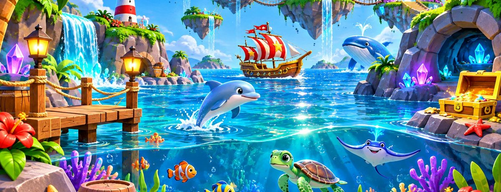
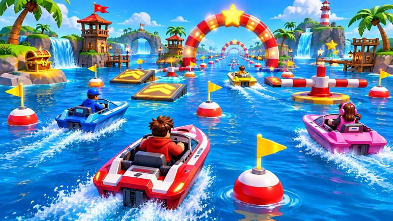
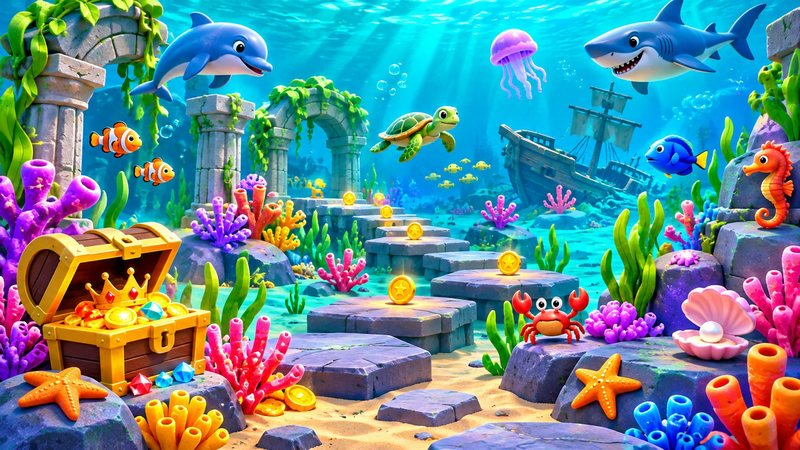
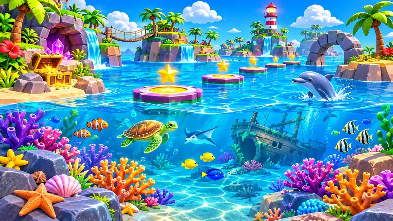
Choisis le parcours dans le jeu, avant de jouer.
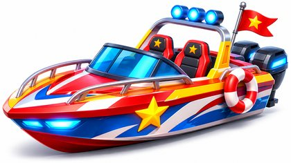
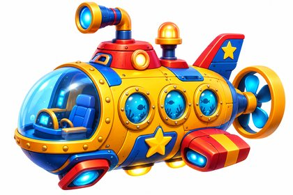
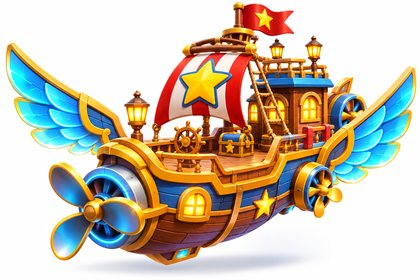
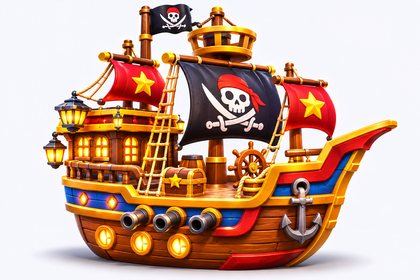
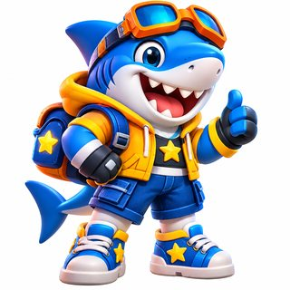
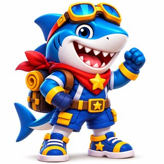
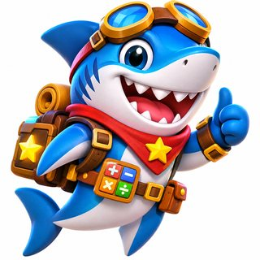
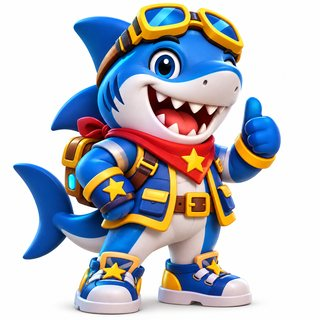
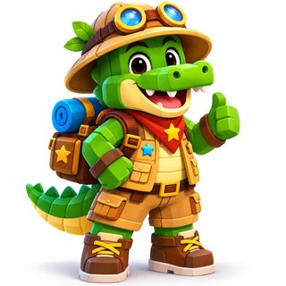
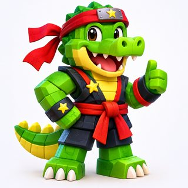